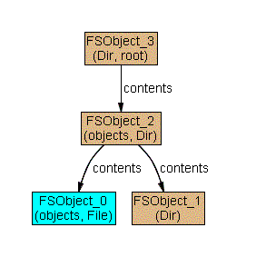
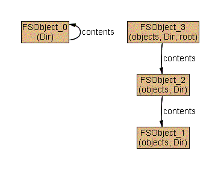
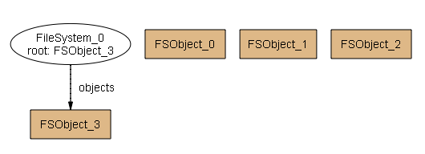
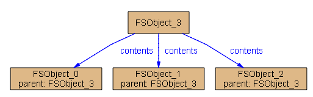

The model we developed in Lesson 2 still has some problems. For instance, the following file system is desperately in need of help:

The problem with this instance is that the bottom-right Dir is reachable from the root which is not considered to be a object in the file system (it is not labeled 'objects'). That directory is reachable from teh file system, but is not part of it! When we wrote
objects in root.*contents
we ensured that all objects in the file system are reachable from the root, but failed to guarantee that all objects reachable from the root are in the file system. We should instead have written
objects = root.*contents
The example functions still generates a few unusual file structures, such as this one:

Our previous problem is gone, but now there are stray tuples in the contents relation. That is, the contents relation is defining relationships between file system objects which are not in any file system. We can fix this by constraining all the tuples in the contents relation to be between objects that are in its file system. Adding the following constraint to the appended fact achieves this
contents in objects->objects
Recall that an Alloy relation is just a set of tuples and also that the "->" operator denotes relational product. Thus objects->objects is a way of saying "a relation from objects to objects" or "all the 2-element tuples where both elements are objects". This constraint says that the contents relation of a file system only maps between objects of that file system.
The resulting bug-free model is shown in the upper-right frame. In the next lesson, we look at a different way to solve these same problems.
We can view samples solutions to the model by executing the run command. Since this is a run command, not a check command, solutions it generates are not counterexamples -- no claim has been made so there's nothing to disprove! If you execute the run command, you will probably get a trivial solution such as this one:

We can enforce some degree of non-triviality by adding the following line to the example function (uncomment it).
all f: FSObject | some fs: FileSystem | f in fs.objects
Now you'll get something that is pleasantly non-trivial. Initially, you will get an ugly mess of lines and nodes. We can clean this up by projecting the result to the FileSystem object.
Now we will see a nice non-trivial example such as this one:

To backup to an earlier lesson, load the << previous lesson - file system II.
When you are ready to procede, load the next lesson >> - file system IV.
restart the tutorial from the beginning.